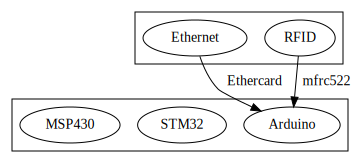
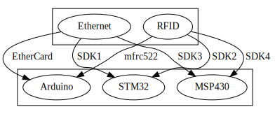
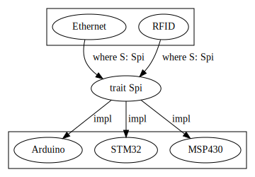

The embedded WG, the embedded community and you
Our community <3
Hardware Abstraction Layer (HAL)
It's like a standard library for embedded devices
`embedded-hal` is a collection of embedded IO abstractions in the shape of traits
Drivers
Drivers in C
Drivers in Rust
`embedded-hal` drivers
5 released: Gyroscope, Accelerometer, Digital compass, ADC, Ethernet
15+ WIP: RFID, motor drivers, humidity sensors, temperature sensors, LCD / OLED controllers, Gas sensors, Ultrasound sensors, etc.
`embedded-hal` applications
Working with the excellent stm32f103xx-hal crate made by @japaricious in @rustlang pic.twitter.com/X4gGBFahw2
— Trangar (@victorkoenders) March 24, 2018
Started working on a new #rustlang driver (based on the embedded-hal by @japaricious) for the PCD8544 LCD controller found in displays like that of Nokia 5110. Work-in-progress code: https://t.co/1mNuzP88Yx. For now, it just draws a line on the screen. pic.twitter.com/hFNcPkK5LP
— Pramode C.E (@pramode_ce) March 22, 2018
Still cheating (the SPI FIFO isn't large enough so I busy wait in the ISR), but hey. Pure @rustlang on an 80MHz Cortex M4. pic.twitter.com/YayVW0ZdPL
— Jonathan Pallant (@therealjpster) February 17, 2018
radar update: took a diversion to write the entire firmware in Rust, but now have simple Doppler mode working pic.twitter.com/VaVXdZOEtR
— Adam Greig (@adamgreig) June 11, 2017

 https://github.com/ah-/anne-key
https://github.com/ah-/anne-key
@rustlang, stability without stagnation, taken to robotics
— let japaric: &'static mut [u8; N]; (@japaricious) March 25, 2017
Probably the first WIP self-balancing robot coded in 100% Rust#RustyRobots 1/ pic.twitter.com/MGRPgKVCsS
Collaboration
- New `embedded-hal` ideas
- People hacking together on the same device / driver
- People willing to maintain crates and moderate discussions
How *you* can help the community
Please continue stabilizing things!
What is the WG doing?
- "Stabilize all the things!"
- Write awesome documentation
- Getting started guide
- Intermediate and advanced documentation
Thanks!
Cross team meeting agenda
Invited: team-infra, team-compiler and team-core
- infra: Testing embedded targets in rust-lang/rust CI
- compiler: Any new insight on asm!, compiler-builtins, panic-fmt?
- core: How do embedded targets fit in the tier system? When does an embedded target become stable?